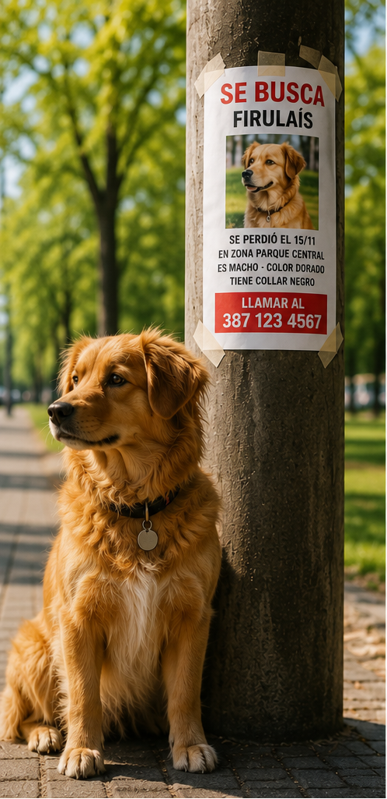

¿Qué hacer si tu mascota se pierde?
Actuá rápido y seguí estos pasos para aumentar las posibilidades de encontrarla.
- Buscá en la zona donde fue vista por última vez.
- Preguntá a vecinos y negocios cercanos.
- Publicá en redes sociales y grupos locales.
- Colocá carteles con información clara.